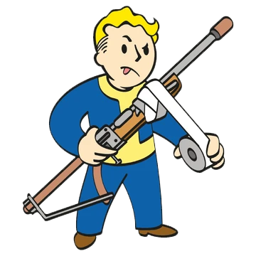
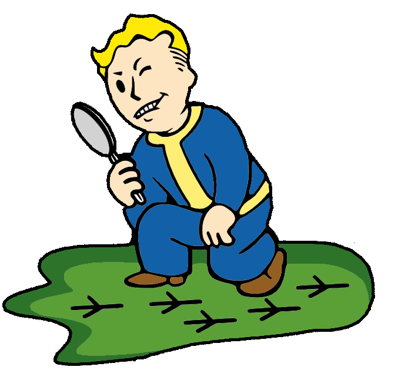
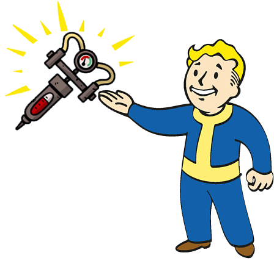
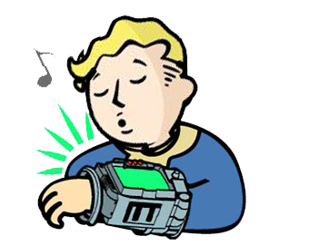
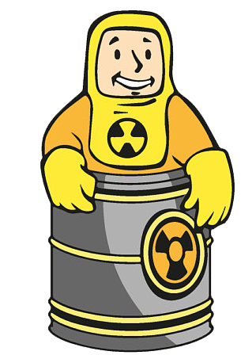
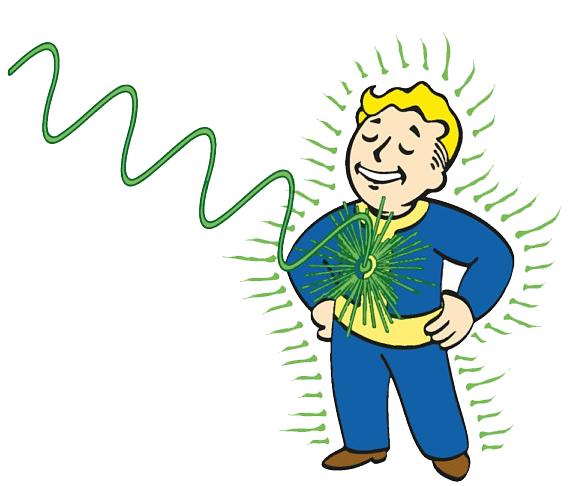

Garanta logo seu Pip-Boy !
O Pip-Boy é um símbolo de segurança e esperança em um mundo pós-apocalíptico. Ele tem sido nosso guia nos Ermos, aparecendo em todos os manuais, anúncios e filmes de treinamento da Vault-Tec. Com seus detalhes vibrantes e acabamento impecável, o Pip-Boy traz um toque de nostalgia e autenticidade diretamente de antes das explosões nucleares. É um computador portátil seguro e leve que pode ser levado para qualquer lugar. Ter o Pip-Boy ao seu lado significa carregar um pedaço da Vault-Tec com você onde quer que vá. Ele é um lembrete constante de que, mesmo em tempos de adversidade, há sempre um motivo para sorrir e seguir em frente. Além disso, sua qualidade e detalhes fazem deste item uma adição valiosa à coleção de qualquer residente das inúmeras Vaults espalhadas pelo mundo.
O que ele pode fazer por você?
Com o auxílio do PipBoy, ele encontra soluções para seus problemas. 
Faz pesquisas ultra rápidas sobre qualquer assunto a qualquer hora. 
Monitore sua saúde, podendo prever doenças e enfermidades até mesmo antes de acontecer. 
Sabe aquelas suas músicas preferidas? Você pode escutá-las a qualquer momento com seu poderoso auto-falante embutido!
Tenha um GPS sempre à mão e não se perca nunca mais.
Esteja sempre atento aos inimigos próximos com seu radar e seu detector de radiação. 
Forneça uma boa iluminação até mesmo nos ambientes mais escuros. 